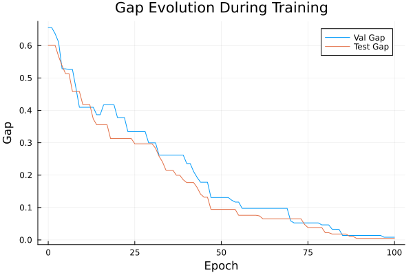
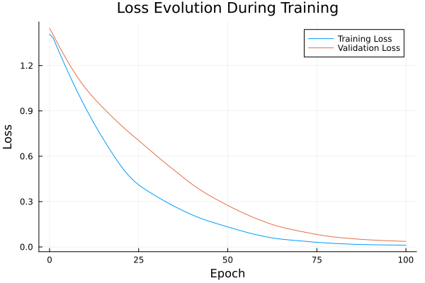

Basic Tutorial: Training with FYL on Argmax Benchmark
This tutorial demonstrates the basic workflow for training a policy using the Perturbed Fenchel-Young Loss algorithm.
Setup
using DecisionFocusedLearningAlgorithms
using DecisionFocusedLearningBenchmarks
using MLUtils: splitobs
using PlotsCreate Benchmark and Data
b = ArgmaxBenchmark()
dataset = generate_dataset(b, 100)
train_data, val_data, test_data = splitobs(dataset; at=(0.3, 0.3, 0.4))(DecisionFocusedLearningBenchmarks.Utils.DataSample{@NamedTuple{}, @NamedTuple{}, Matrix{Float32}, Vector{Float32}, Vector{Float32}}[DataSample(x=Float32[0.240486 0.363291 … -0.180095 0.476661; -0.969746 0.265472 … -0.0814479 -0.118752; … ; -0.864846 0.454841 … 0.618048 0.888079; -0.1356 0.352737 … 0.42329 -1.23857], θ=Float32[0.918912, -0.80982, 0.531979, -0.827395, -0.439053, -1.33852, -1.13555, -0.60665, -0.280058, 0.398051], y=Float32[1.0, 0.0, 0.0, 0.0, 0.0, 0.0, 0.0, 0.0, 0.0, 0.0]), DataSample(x=Float32[0.773281 0.540492 … -2.28779 0.544042; -0.0405328 -0.401899 … 0.0370611 0.120811; … ; -0.83634 -0.694523 … -0.00525501 -0.0130725; -0.43064 0.354751 … 0.43538 0.908258], θ=Float32[0.237762, 0.250757, -0.99414, 0.499764, 1.06665, 0.873701, -2.26545, -2.00216, 0.0411313, -0.864619], y=Float32[0.0, 0.0, 0.0, 0.0, 1.0, 0.0, 0.0, 0.0, 0.0, 0.0]), DataSample(x=Float32[0.459061 0.870929 … -2.05417 -1.9686; -0.427635 -0.719375 … 1.43138 0.22682; … ; -0.0669587 -1.9939 … -0.707312 0.108624; -1.10591 0.48602 … -1.05163 0.586699], θ=Float32[0.70869, 0.533586, -1.22255, -0.623662, 0.621499, 0.2803, -0.542096, -2.78305, 0.970124, 0.23133], y=Float32[0.0, 0.0, 0.0, 0.0, 0.0, 0.0, 0.0, 0.0, 1.0, 0.0]), DataSample(x=Float32[-0.407503 -0.577009 … 0.480103 1.08454; -1.34512 1.28981 … 0.778883 1.57539; … ; 1.36605 0.28345 … 1.62633 -0.103307; 0.271048 -0.862903 … -1.53542 -0.335634], θ=Float32[0.035265, 0.0107359, 0.580843, -0.546119, -2.43279, 1.01945, -1.76403, -0.51874, -0.973477, -0.763366], y=Float32[0.0, 0.0, 0.0, 0.0, 0.0, 1.0, 0.0, 0.0, 0.0, 0.0]), DataSample(x=Float32[-1.03339 -1.86354 … -1.0736 -1.0111; -0.278307 0.0959969 … -1.02407 -0.235265; … ; -1.34945 -1.26284 … -0.964879 0.76884; -0.789632 1.63129 … -1.14343 0.229967], θ=Float32[1.62933, 0.85985, 1.03177, -0.419674, 0.0774004, -1.23604, -1.68803, 0.819346, 2.48023, -0.0220863], y=Float32[0.0, 0.0, 0.0, 0.0, 0.0, 0.0, 0.0, 0.0, 1.0, 0.0]), DataSample(x=Float32[0.359202 0.526064 … -2.40069 -1.28717; 1.52231 0.0720119 … 1.50533 -1.49787; … ; -0.100076 0.715337 … -0.411785 0.361643; 0.00931112 -2.85963 … 0.0955983 -0.94801], θ=Float32[-0.934766, 0.470111, 1.25755, -0.566664, 0.982229, -0.351884, 0.316169, -0.0202826, 0.264677, 2.19625], y=Float32[0.0, 0.0, 0.0, 0.0, 0.0, 0.0, 0.0, 0.0, 0.0, 1.0]), DataSample(x=Float32[-0.910306 -0.112934 … 0.412055 -0.693538; -1.79196 0.86659 … -0.717691 1.01175; … ; 0.3854 -0.888194 … -0.897547 1.0357; -1.78047 -0.7841 … 0.282056 -0.217833], θ=Float32[2.35752, -0.0149454, -1.83688, 0.991726, -0.688925, -1.92898, -1.62783, -2.08702, 0.718914, -1.08165], y=Float32[1.0, 0.0, 0.0, 0.0, 0.0, 0.0, 0.0, 0.0, 0.0, 0.0]), DataSample(x=Float32[-0.028709 0.582736 … -0.435858 -0.273846; 0.182936 -0.958393 … 1.2194 1.26451; … ; -0.777201 0.563187 … -0.304059 0.45393; 1.442 0.730546 … 0.817911 0.715264], θ=Float32[-0.337206, -0.132149, 0.74123, 1.14234, -0.549006, -1.12792, -0.631577, 0.659296, -1.19785, -1.42941], y=Float32[0.0, 0.0, 0.0, 1.0, 0.0, 0.0, 0.0, 0.0, 0.0, 0.0]), DataSample(x=Float32[0.580941 -0.290678 … -0.617634 -1.48189; -0.126238 -1.90043 … 0.420838 -1.69767; … ; 0.139511 -1.75512 … -0.165907 -1.14637; -1.50267 -0.981605 … -1.02475 -0.114096], θ=Float32[0.284165, 3.04298, 1.03549, 0.240482, -1.48361, -2.27888, 2.69363, 0.349972, 1.00282, 2.20394], y=Float32[0.0, 1.0, 0.0, 0.0, 0.0, 0.0, 0.0, 0.0, 0.0, 0.0]), DataSample(x=Float32[-0.485178 0.954257 … 0.184847 0.925468; 1.43397 -1.07579 … -1.65752 -0.110471; … ; 1.22193 -1.22113 … 0.469315 -1.01752; -0.359271 -1.31258 … -0.0146243 -0.831786], θ=Float32[-1.78276, 0.924072, -0.0946295, 2.04145, 0.451528, -0.00331714, -0.433313, -2.14379, 0.612808, 1.1267], y=Float32[0.0, 0.0, 0.0, 1.0, 0.0, 0.0, 0.0, 0.0, 0.0, 0.0]) … DataSample(x=Float32[1.13681 -0.696502 … 0.866712 0.194328; -0.635347 -1.84105 … 1.68724 -0.455941; … ; -1.31893 -1.30357 … -1.35945 0.380394; -1.23847 0.909242 … 0.932292 -0.854576], θ=Float32[1.05761, 1.38831, -1.72731, -0.512855, 0.733347, -0.497847, 0.77775, -0.578584, -1.44762, 0.277102], y=Float32[0.0, 1.0, 0.0, 0.0, 0.0, 0.0, 0.0, 0.0, 0.0, 0.0]), DataSample(x=Float32[-1.29202 -0.777301 … 1.15687 -1.10562; 1.0071 1.30548 … 0.0326703 0.183011; … ; -1.07953 -0.376952 … -0.48613 0.936433; -0.54156 -1.50425 … -1.94488 1.29841], θ=Float32[1.22824, 0.629919, -1.59993, 2.28722, 1.63178, 0.0453956, 2.95457, 0.664737, 1.41223, -0.847328], y=Float32[0.0, 0.0, 0.0, 0.0, 0.0, 0.0, 1.0, 0.0, 0.0, 0.0]), DataSample(x=Float32[2.00228 1.10526 … 0.432515 -0.0266452; -0.763978 0.648722 … -0.443854 -0.169911; … ; -0.485035 0.430692 … 0.0532977 -0.823116; 0.115016 0.206506 … -0.754685 -2.10173], θ=Float32[-0.0177607, -1.34732, 0.708272, -1.54436, 1.82169, 0.412799, -0.61135, 0.241637, 0.426123, 1.78235], y=Float32[0.0, 0.0, 0.0, 0.0, 1.0, 0.0, 0.0, 0.0, 0.0, 0.0]), DataSample(x=Float32[0.178706 1.85751 … -0.412448 1.24112; 0.717672 -1.46871 … -0.366694 1.12599; … ; 2.19328 0.641009 … -1.58252 -0.599799; 0.258439 -0.445619 … -0.3409 -0.595593], θ=Float32[-1.74152, 0.0930681, 0.929907, -0.748338, 0.801482, 0.385108, 0.332899, -1.38824, 1.48206, -1.4271], y=Float32[0.0, 0.0, 0.0, 0.0, 0.0, 0.0, 0.0, 0.0, 1.0, 0.0]), DataSample(x=Float32[-0.274952 -1.3089 … 0.424908 0.121872; 0.22607 0.131769 … 0.142171 0.597275; … ; 1.53825 0.00623952 … -0.236094 -0.305802; -0.670613 0.526442 … 0.39381 -0.248845], θ=Float32[-0.444673, 0.484681, -0.657213, 0.492971, 0.680205, 0.224549, 0.103295, 2.31575, -0.138127, -0.268701], y=Float32[0.0, 0.0, 0.0, 0.0, 0.0, 0.0, 0.0, 1.0, 0.0, 0.0]), DataSample(x=Float32[0.180668 0.433097 … 1.10373 -1.47441; -0.654845 -1.29339 … 0.722304 1.19999; … ; 0.596743 -0.21075 … -2.08426 0.0855264; 0.295187 -0.212232 … -1.39231 0.932131], θ=Float32[-0.565109, 0.882039, -1.09781, 0.0810224, 2.29771, 2.85711, 0.885016, 1.79232, 1.12239, -0.283062], y=Float32[0.0, 0.0, 0.0, 0.0, 0.0, 1.0, 0.0, 0.0, 0.0, 0.0]), DataSample(x=Float32[0.389562 0.114093 … -1.45845 -0.652636; 0.781294 0.0640002 … 1.07573 0.564921; … ; -0.19094 -0.307552 … -1.56267 1.56995; -1.05011 0.997674 … 0.136745 0.790802], θ=Float32[-0.145533, -0.163461, -0.0146104, -1.67521, 0.6298, -0.749313, -0.783572, 1.04739, 0.68703, -1.45358], y=Float32[0.0, 0.0, 0.0, 0.0, 0.0, 0.0, 0.0, 1.0, 0.0, 0.0]), DataSample(x=Float32[-0.43495 -0.0628828 … -0.0449865 0.492483; -1.26259 0.290617 … -0.163148 1.22388; … ; -0.380756 -1.72506 … 0.393605 1.03104; -1.48217 -0.317533 … -0.937306 -1.05399], θ=Float32[1.82372, 1.10552, 0.0226323, 0.656656, 0.546002, 0.439964, -2.03738, 0.302661, 0.380752, -1.27089], y=Float32[1.0, 0.0, 0.0, 0.0, 0.0, 0.0, 0.0, 0.0, 0.0, 0.0]), DataSample(x=Float32[0.254048 -0.0904256 … -0.427386 1.14747; -1.46237 -0.941835 … -0.0154038 0.643157; … ; -1.50235 0.857278 … -0.913227 0.592826; -0.208014 0.38643 … -1.541 -1.70091], θ=Float32[1.84201, -0.0762814, -0.142381, -0.417272, -1.12134, 0.0547616, -0.398085, 0.602623, 1.50937, -0.524807], y=Float32[1.0, 0.0, 0.0, 0.0, 0.0, 0.0, 0.0, 0.0, 0.0, 0.0]), DataSample(x=Float32[-0.160182 -1.01844 … -0.427889 -0.267949; 1.02348 1.15471 … 0.0254397 -0.156093; … ; 0.843798 0.942856 … 0.742908 0.100677; -0.268796 -0.234903 … 1.08301 2.10383], θ=Float32[-0.717058, -1.07817, -0.19794, 0.259277, 2.1475, -1.54027, 0.14952, 1.44722, -0.763351, -1.02879], y=Float32[0.0, 0.0, 0.0, 0.0, 1.0, 0.0, 0.0, 0.0, 0.0, 0.0])], DecisionFocusedLearningBenchmarks.Utils.DataSample{@NamedTuple{}, @NamedTuple{}, Matrix{Float32}, Vector{Float32}, Vector{Float32}}[DataSample(x=Float32[-0.144709 1.01176 … 0.0604317 -0.209048; 0.0532483 0.680479 … 0.432039 0.136876; … ; -0.355334 -0.362668 … -0.374382 -0.885064; 0.785406 1.27315 … 1.14513 -1.39447], θ=Float32[-0.212626, -1.46907, -0.178014, 2.12223, -0.555641, 1.78013, 2.15126, -0.0543608, -0.281059, 0.961881], y=Float32[0.0, 0.0, 0.0, 0.0, 0.0, 0.0, 1.0, 0.0, 0.0, 0.0]), DataSample(x=Float32[2.36048 0.38712 … -0.773738 2.81193; -0.477465 0.0348864 … -0.923469 1.35876; … ; -1.05544 0.730968 … -0.418851 -0.388191; 0.283297 -0.020271 … -0.0243866 -0.592306], θ=Float32[-0.182104, -1.25303, 0.583968, -0.538045, 1.40467, -0.132952, 3.1956, 0.184567, 0.801909, -2.04307], y=Float32[0.0, 0.0, 0.0, 0.0, 0.0, 0.0, 1.0, 0.0, 0.0, 0.0]), DataSample(x=Float32[-0.132739 -0.294745 … -0.257585 0.65793; -1.12493 -0.146942 … 0.653894 0.193522; … ; 1.72881 -0.754172 … 0.302002 1.36886; -0.249551 0.280548 … 0.775098 -0.752973], θ=Float32[-0.524403, 0.375261, -0.101073, 1.22681, 0.534873, 1.0222, -1.69719, -1.95869, -1.25352, -1.19089], y=Float32[0.0, 0.0, 0.0, 1.0, 0.0, 0.0, 0.0, 0.0, 0.0, 0.0]), DataSample(x=Float32[-0.754532 -0.807999 … -0.652556 -1.61429; -0.90214 0.292242 … 0.34372 0.859135; … ; 1.37492 -0.178599 … -0.765736 -0.125864; -1.44614 0.621394 … -0.375516 -0.126577], θ=Float32[0.698818, 0.0114658, 0.359528, -0.278396, -0.211201, -1.0219, 2.74236, 0.0452428, 1.28869, 0.17183], y=Float32[0.0, 0.0, 0.0, 0.0, 0.0, 0.0, 1.0, 0.0, 0.0, 0.0]), DataSample(x=Float32[-0.390046 0.0692469 … -0.241038 -1.17934; 1.03024 -0.219699 … 0.320105 -0.615316; … ; 0.256439 -0.575612 … -1.70253 2.26155; 0.261026 0.486806 … -0.120253 -2.08306], θ=Float32[-0.901467, 0.0238062, -0.896422, -0.0773723, 1.51134, -0.00764454, 0.495629, 0.664006, 1.27492, 0.14581], y=Float32[0.0, 0.0, 0.0, 0.0, 1.0, 0.0, 0.0, 0.0, 0.0, 0.0]), DataSample(x=Float32[-0.088839 0.0215019 … 0.618123 0.173092; 0.236913 0.866539 … 0.507314 -1.06111; … ; -0.454487 0.558604 … -0.539802 0.945173; -0.386801 2.77648 … -1.21049 0.174436], θ=Float32[0.275127, -2.74834, 1.61586, -0.746831, -0.837226, -1.56687, -1.81239, -0.43448, 0.359257, 0.0182921], y=Float32[0.0, 0.0, 1.0, 0.0, 0.0, 0.0, 0.0, 0.0, 0.0, 0.0]), DataSample(x=Float32[-1.24928 -1.38431 … 1.03721 0.442681; 1.51986 -1.60266 … -2.36255 0.165365; … ; -0.285461 1.32973 … -1.91903 2.24286; -0.79435 -0.34561 … 1.41965 -1.15087], θ=Float32[0.297302, 1.14649, -0.174722, 0.988114, 0.431796, 0.243973, -1.45675, -0.980576, 1.78633, -1.28389], y=Float32[0.0, 0.0, 0.0, 0.0, 0.0, 0.0, 0.0, 0.0, 1.0, 0.0]), DataSample(x=Float32[-0.380883 -0.38345 … -0.29298 -0.425385; 1.00678 -0.734093 … -0.237054 0.0526368; … ; -0.303953 0.0960592 … -0.285813 -0.258745; -0.05841 0.787297 … 0.554699 -0.208345], θ=Float32[0.328957, -0.35394, -0.487542, -0.687284, -1.10038, -2.37489, 2.09487, -0.507949, 0.0157012, 0.347206], y=Float32[0.0, 0.0, 0.0, 0.0, 0.0, 0.0, 1.0, 0.0, 0.0, 0.0]), DataSample(x=Float32[-1.68741 -0.360619 … 0.0661757 -0.0539718; -0.693306 0.846651 … -0.522584 2.00327; … ; -0.43816 0.520868 … -0.369938 -1.60626; -1.20302 2.47436 … 0.501277 0.260087], θ=Float32[1.87709, -2.43422, 0.134321, 0.14669, 0.402642, 0.470011, -1.30474, -0.834442, 0.36071, -0.839189], y=Float32[1.0, 0.0, 0.0, 0.0, 0.0, 0.0, 0.0, 0.0, 0.0, 0.0]), DataSample(x=Float32[0.864132 -0.0945269 … 0.439456 -0.600664; -0.132166 0.807202 … -1.52877 0.408699; … ; 0.50341 -0.318406 … -0.0129123 0.651818; 1.69198 -1.44684 … 1.68491 0.0707698], θ=Float32[-1.90438, 0.372815, -0.429599, 1.67244, 1.08555, 0.843114, -0.719092, -1.22768, 0.10476, -0.611384], y=Float32[0.0, 0.0, 0.0, 1.0, 0.0, 0.0, 0.0, 0.0, 0.0, 0.0]) … DataSample(x=Float32[-0.798554 1.91586 … -0.76689 0.0370875; 0.961482 2.37932 … 1.24737 0.560051; … ; -0.344494 1.20106 … -0.522712 0.382804; -1.08637 0.626365 … -0.587356 -0.236247], θ=Float32[0.699075, -3.29845, 0.0231762, -0.254631, 0.732371, 1.27605, -0.0835652, 0.0683662, 0.474576, -0.247218], y=Float32[0.0, 0.0, 0.0, 0.0, 0.0, 1.0, 0.0, 0.0, 0.0, 0.0]), DataSample(x=Float32[1.1865 0.506356 … -0.735558 -0.757884; -0.904258 -0.579949 … 0.206115 1.23678; … ; 0.850602 0.893699 … -0.22188 0.000215143; 0.135419 -0.909582 … -0.352808 0.134118], θ=Float32[-0.604091, -0.138717, 1.13948, -1.02018, 1.17426, -0.833822, -0.428795, 0.707712, 0.219835, -0.320004], y=Float32[0.0, 0.0, 0.0, 0.0, 1.0, 0.0, 0.0, 0.0, 0.0, 0.0]), DataSample(x=Float32[0.997316 -0.54917 … -0.526663 0.598864; 2.65767 0.0205101 … 0.277609 0.339204; … ; 2.06886 -0.225151 … 1.14726 -0.0317435; -0.121811 0.115784 … 0.159056 -0.364723], θ=Float32[-3.52373, 0.482715, 0.206758, -0.265472, 0.114981, 0.732239, -0.0592235, 0.090643, -0.214121, -0.552112], y=Float32[0.0, 0.0, 0.0, 0.0, 0.0, 1.0, 0.0, 0.0, 0.0, 0.0]), DataSample(x=Float32[1.75512 -1.3014 … 0.479659 1.34771; -0.369305 -0.69412 … 1.03774 0.469867; … ; 0.363626 -0.530725 … 0.0780408 0.482067; -1.25579 0.290317 … 0.591148 1.02434], θ=Float32[-0.373752, 1.58833, -1.82035, 1.28723, 0.124817, 1.29136, 0.121839, -1.48225, -1.32194, -1.43955], y=Float32[0.0, 1.0, 0.0, 0.0, 0.0, 0.0, 0.0, 0.0, 0.0, 0.0]), DataSample(x=Float32[-0.919459 0.388772 … 0.445034 -0.581238; -0.858235 -0.841943 … -1.3293 0.307008; … ; -0.0479559 -0.861933 … 1.0516 -0.180945; -0.105632 1.25204 … 0.937707 -0.98968], θ=Float32[1.4162, -0.054069, 0.367163, -2.80987, 1.89058, 0.237225, -0.619659, 0.17854, -0.201351, 0.647182], y=Float32[0.0, 0.0, 0.0, 0.0, 1.0, 0.0, 0.0, 0.0, 0.0, 0.0]), DataSample(x=Float32[-1.64522 -0.0777064 … 0.986111 0.597743; -0.297716 1.28833 … 0.61295 -0.145119; … ; -0.860049 2.37311 … 0.921765 0.0825834; 1.60358 -0.380788 … 1.52332 0.185582], θ=Float32[0.596671, -2.20408, 1.64181, 2.89924, -0.085371, 0.628566, -0.508784, 0.156826, -2.22423, 0.171849], y=Float32[0.0, 0.0, 0.0, 1.0, 0.0, 0.0, 0.0, 0.0, 0.0, 0.0]), DataSample(x=Float32[2.02354 -1.93168 … -0.93476 -0.0427287; -0.275629 2.22715 … -0.913521 0.525353; … ; -1.82504 0.173999 … 0.54557 -2.18561; -0.170221 -0.326147 … -0.29859 1.0503], θ=Float32[0.493347, -0.592138, -0.772394, 1.88184, -0.171264, -0.392331, 1.57617, 0.182667, 1.08176, 1.00312], y=Float32[0.0, 0.0, 0.0, 1.0, 0.0, 0.0, 0.0, 0.0, 0.0, 0.0]), DataSample(x=Float32[2.31909 -1.19195 … -0.769175 -2.61983; 1.13893 0.111705 … -0.0146289 -0.208428; … ; 0.894672 -0.731578 … -1.04821 -0.612701; -0.600678 1.11824 … -0.0216508 0.186165], θ=Float32[-1.94595, 0.292365, 1.30297, -1.26851, -0.170097, -0.548403, -0.16458, 1.7378, 0.67354, 1.85273], y=Float32[0.0, 0.0, 0.0, 0.0, 0.0, 0.0, 0.0, 0.0, 0.0, 1.0]), DataSample(x=Float32[-0.369826 2.02782 … -0.570412 1.10325; 0.444095 -0.851737 … 0.0863362 -0.557922; … ; -1.42929 0.0513274 … 0.677704 0.425423; -1.32705 -0.0518881 … 0.32407 1.39377], θ=Float32[1.06798, -0.547734, -0.80919, -1.57105, -0.869636, -0.920075, -0.821722, -0.66507, -0.029523, -0.607908], y=Float32[1.0, 0.0, 0.0, 0.0, 0.0, 0.0, 0.0, 0.0, 0.0, 0.0]), DataSample(x=Float32[-0.926786 -0.19775 … -0.188673 1.11488; -0.119393 0.92545 … -0.364162 -0.973377; … ; 0.100742 -1.22592 … 1.56184 0.584653; 0.262245 -0.0250825 … 0.110514 -0.54239], θ=Float32[-0.27247, 0.385949, 1.55797, 0.570435, -0.00587768, -1.51996, -0.429785, 0.384653, -0.821452, 0.00700397], y=Float32[0.0, 0.0, 1.0, 0.0, 0.0, 0.0, 0.0, 0.0, 0.0, 0.0])], DecisionFocusedLearningBenchmarks.Utils.DataSample{@NamedTuple{}, @NamedTuple{}, Matrix{Float32}, Vector{Float32}, Vector{Float32}}[DataSample(x=Float32[-0.489755 2.26187 … 0.177914 0.67971; -0.819115 -1.89043 … -0.17171 -1.02985; … ; 0.200782 0.0375074 … 0.014164 -1.38229; 1.46851 -1.69743 … 0.261168 -1.62012], θ=Float32[-0.0323977, 0.472089, -1.47863, 1.60807, 0.973127, -0.455904, 0.377785, 1.82697, -0.218567, 1.97008], y=Float32[0.0, 0.0, 0.0, 0.0, 0.0, 0.0, 0.0, 0.0, 0.0, 1.0]), DataSample(x=Float32[-1.26738 -0.836877 … -0.887435 -1.06252; 1.20661 -0.730532 … 0.0697317 -1.62566; … ; -1.72868 0.124569 … 0.255434 0.786019; 0.341239 -0.115299 … -1.32802 -1.25819], θ=Float32[0.671732, 0.913739, -2.08701, 0.239812, 0.289364, -0.942993, -1.54949, -0.873502, 0.351763, 1.99578], y=Float32[0.0, 0.0, 0.0, 0.0, 0.0, 0.0, 0.0, 0.0, 0.0, 1.0]), DataSample(x=Float32[0.291215 -0.707927 … 1.37906 1.11328; 0.578812 -0.812001 … -0.288246 0.0422472; … ; -1.02515 -1.16676 … -0.681228 -1.97377; -0.927504 -0.0588541 … -1.06439 -1.08141], θ=Float32[1.00893, 0.982674, -0.0511038, 2.12828, 0.525788, -0.866679, 0.124158, 0.624216, 0.522221, 1.85397], y=Float32[0.0, 0.0, 0.0, 1.0, 0.0, 0.0, 0.0, 0.0, 0.0, 0.0]), DataSample(x=Float32[0.374694 1.06927 … -0.055057 0.184212; -0.230435 0.387683 … -1.04267 -0.224706; … ; -2.07079 1.32828 … 0.0664713 0.22648; -1.01641 -0.289371 … 0.803672 1.36343], θ=Float32[1.79255, -1.69489, 1.61284, -1.75025, -0.957826, -1.31193, -1.16834, -1.17367, 0.723765, -0.566717], y=Float32[1.0, 0.0, 0.0, 0.0, 0.0, 0.0, 0.0, 0.0, 0.0, 0.0]), DataSample(x=Float32[1.3969 0.305856 … -1.42905 1.21839; 0.299713 0.0180578 … -1.00806 -0.464272; … ; -2.23799 0.372485 … -0.291804 -0.402838; 1.09871 0.0213208 … 0.27409 0.101621], θ=Float32[0.144609, -0.736345, 0.872459, 0.899506, -0.704847, 0.607149, -0.372146, 0.829183, 1.00302, -0.307189], y=Float32[0.0, 0.0, 0.0, 0.0, 0.0, 0.0, 0.0, 0.0, 1.0, 0.0]), DataSample(x=Float32[-0.392714 0.253431 … 0.780514 0.119475; -0.298731 0.0897101 … -0.492239 0.0179016; … ; -0.989786 0.179077 … -1.23431 0.0586389; -0.326261 -1.9942 … 1.36186 0.120671], θ=Float32[1.34663, 0.367857, -0.0496339, 1.16087, 1.21656, 1.26224, -1.25863, -2.01433, -0.0693321, 0.311237], y=Float32[1.0, 0.0, 0.0, 0.0, 0.0, 0.0, 0.0, 0.0, 0.0, 0.0]), DataSample(x=Float32[0.473175 -0.186629 … -0.524838 -0.460469; 0.600507 -0.321322 … 0.380569 -1.55231; … ; 1.19965 -0.478301 … 1.47708 -1.06; 0.447126 -0.0538989 … 0.087406 0.879557], θ=Float32[-2.15097, 0.473532, -0.539216, 0.113185, -0.430438, -0.86084, 1.9677, 1.36292, -1.01717, 1.34124], y=Float32[0.0, 0.0, 0.0, 0.0, 0.0, 0.0, 1.0, 0.0, 0.0, 0.0]), DataSample(x=Float32[-1.00057 0.167062 … -1.39584 -0.54364; 0.148242 0.455638 … -0.599626 -1.42705; … ; -1.4025 -0.279222 … -0.192169 -0.472643; 1.1375 -0.936916 … -2.37384 -0.0299605], θ=Float32[0.874962, 0.29934, -0.114326, -0.627632, -1.24018, -0.397417, 0.578125, 0.0338691, 2.71877, 1.45568], y=Float32[0.0, 0.0, 0.0, 0.0, 0.0, 0.0, 0.0, 0.0, 1.0, 0.0]), DataSample(x=Float32[1.66367 0.211092 … 0.0304443 0.33147; 0.146323 0.496643 … -0.788394 0.919279; … ; 0.146533 -0.950599 … -0.463838 -0.0532105; -0.403693 0.76666 … -0.980078 -2.17708], θ=Float32[-0.732471, -0.129387, -1.18087, 0.273015, 1.36893, -0.469984, -0.752165, -0.0445553, 1.55053, 0.551894], y=Float32[0.0, 0.0, 0.0, 0.0, 0.0, 0.0, 0.0, 0.0, 1.0, 0.0]), DataSample(x=Float32[0.26604 -0.262842 … -0.198805 -1.19687; 2.09712 1.16196 … 1.27612 1.71744; … ; 0.445176 -0.418923 … 0.380615 -2.32704; 0.957172 0.425689 … -0.0524103 -0.652892], θ=Float32[-2.22489, -0.253921, 0.626029, -0.298533, 1.00474, -0.00260792, -1.01362, 0.494073, -0.608988, 1.3111], y=Float32[0.0, 0.0, 0.0, 0.0, 0.0, 0.0, 0.0, 0.0, 0.0, 1.0]) … DataSample(x=Float32[-0.650836 -0.212532 … 0.673176 -1.1219; 0.502426 0.421449 … -0.0195964 -0.076093; … ; 0.0912398 -0.0968085 … -0.540771 1.34953; 3.44507 0.934053 … 0.518181 -1.4356], θ=Float32[-2.06496, -0.664431, 1.9609, 0.851251, -0.95074, -2.14838, 2.98733, -0.562282, -0.430396, 0.964191], y=Float32[0.0, 0.0, 0.0, 0.0, 0.0, 0.0, 1.0, 0.0, 0.0, 0.0]), DataSample(x=Float32[0.820536 1.00506 … -0.662242 -1.33404; -0.23818 -0.0485917 … -0.751013 1.59271; … ; -0.403683 -0.54584 … 0.171582 0.425517; 0.89071 -1.176 … -1.19708 0.817843], θ=Float32[-0.297511, 0.676183, 2.12419, 0.239886, 1.6963, -0.49307, -0.419577, -1.20229, 1.04125, -1.06187], y=Float32[0.0, 0.0, 1.0, 0.0, 0.0, 0.0, 0.0, 0.0, 0.0, 0.0]), DataSample(x=Float32[1.70144 -0.163052 … -1.4304 -0.157219; -0.184376 1.56436 … 0.0630971 0.95011; … ; 1.52494 -0.914483 … -0.799876 0.153808; -0.698272 -0.0840616 … -0.572499 -0.0766816], θ=Float32[-1.35849, -0.483429, -1.86886, -1.4746, 0.561844, 0.803679, -0.00779928, -0.392056, 1.06683, -0.569799], y=Float32[0.0, 0.0, 0.0, 0.0, 0.0, 0.0, 0.0, 0.0, 1.0, 0.0]), DataSample(x=Float32[1.31615 -0.233164 … -0.51045 0.221287; -0.771311 -0.0530777 … 0.851706 -0.143111; … ; 2.52984 -0.895582 … 1.41397 -1.25613; -0.444556 -0.0667081 … 0.739561 -0.378481], θ=Float32[-1.54296, 0.595397, -1.00193, -0.528851, -0.901722, -0.0643507, 0.604252, 0.485114, -1.31438, 0.6289], y=Float32[0.0, 0.0, 0.0, 0.0, 0.0, 0.0, 0.0, 0.0, 0.0, 1.0]), DataSample(x=Float32[-0.883912 0.274868 … -0.319177 1.59748; 0.306783 0.036992 … -0.860402 0.137689; … ; -0.198439 1.66791 … -1.16744 -1.14299; 0.161578 0.310089 … 0.238636 2.63627], θ=Float32[0.679403, -1.68401, 1.40545, -1.96286, -2.48837, 0.808375, -1.85479, 1.10833, 0.901548, -0.991698], y=Float32[0.0, 0.0, 1.0, 0.0, 0.0, 0.0, 0.0, 0.0, 0.0, 0.0]), DataSample(x=Float32[1.49711 -1.17301 … 0.147287 0.0822472; 2.03372 -0.28452 … 0.67814 -2.48819; … ; -0.381351 2.09313 … -1.23404 0.811; -0.883153 0.133195 … 0.641652 -0.157017], θ=Float32[-1.07514, -0.218632, -1.22871, -2.58634, -1.28927, 0.231332, -0.235561, -0.946815, 0.488168, 1.52668], y=Float32[0.0, 0.0, 0.0, 0.0, 0.0, 0.0, 0.0, 0.0, 0.0, 1.0]), DataSample(x=Float32[1.39553 -1.03118 … 0.744818 -0.0518902; 0.248643 0.736155 … -1.67569 0.00829625; … ; 1.30758 1.71036 … -0.554871 -1.10953; -0.0768525 0.894794 … 1.00869 0.534174], θ=Float32[-1.36948, -1.76853, 0.0282934, 0.160383, -1.31877, 1.34757, -0.782232, -1.96781, 1.10225, 0.382566], y=Float32[0.0, 0.0, 0.0, 0.0, 0.0, 1.0, 0.0, 0.0, 0.0, 0.0]), DataSample(x=Float32[-0.376938 -1.82172 … 1.00201 -1.53837; 0.471244 -1.73836 … 0.300143 0.824806; … ; -0.518876 1.35785 … 0.609079 1.98361; -0.0963069 0.828421 … -0.482934 -1.09768], θ=Float32[0.31832, 0.367872, -0.230361, 1.86788, 0.47049, 1.07654, -0.260931, 0.837235, -0.937698, -0.82233], y=Float32[0.0, 0.0, 0.0, 1.0, 0.0, 0.0, 0.0, 0.0, 0.0, 0.0]), DataSample(x=Float32[0.76842 0.87647 … -0.888422 -0.371702; -0.817713 -0.262213 … 0.821918 -2.46836; … ; 0.768645 -2.25187 … 1.6677 0.911223; -0.672001 1.62985 … 1.73641 0.294501], θ=Float32[0.400462, 0.529037, 0.487136, 1.05121, 0.0835114, 0.629181, -0.379093, 1.34248, -2.33787, 1.30961], y=Float32[0.0, 0.0, 0.0, 0.0, 0.0, 0.0, 0.0, 1.0, 0.0, 0.0]), DataSample(x=Float32[0.0346786 -0.324402 … 0.33325 1.00615; -0.984037 1.31359 … -1.08095 -1.19623; … ; 1.65862 -0.815792 … -1.13838 -1.43326; 0.142626 0.744512 … 0.374257 -0.342841], θ=Float32[-0.69062, 0.0694381, 0.11714, 1.09945, -1.53027, -0.68273, 0.642523, -1.19468, 1.33877, 1.61986], y=Float32[0.0, 0.0, 0.0, 0.0, 0.0, 0.0, 0.0, 0.0, 0.0, 1.0])], DecisionFocusedLearningBenchmarks.Utils.DataSample{@NamedTuple{}, @NamedTuple{}, Matrix{Float32}, Vector{Float32}, Vector{Float32}}[])Create Policy
model = generate_statistical_model(b; seed=0)
maximizer = generate_maximizer(b)
policy = DFLPolicy(model, maximizer)DFLPolicy{Flux.Chain{Tuple{Flux.Dense{typeof(identity), Matrix{Float32}, Bool}, typeof(vec)}}, typeof(DecisionFocusedLearningBenchmarks.Argmax.one_hot_argmax)}(Chain(Dense(5 => 1; bias=false), vec), DecisionFocusedLearningBenchmarks.Argmax.one_hot_argmax)Configure Algorithm
algorithm = PerturbedFenchelYoungLossImitation(;
nb_samples=10, ε=0.1, threaded=true, seed=0
)PerturbedFenchelYoungLossImitation{Optimisers.Adam{Float64, Tuple{Float64, Float64}, Float64}, Int64}(10, 0.1, true, Optimisers.Adam(eta=0.001, beta=(0.9, 0.999), epsilon=1.0e-8), 0, false)Define Metrics to track during training
validation_loss_metric = FYLLossMetric(val_data, :validation_loss)
val_gap_metric = FunctionMetric(:val_gap, val_data) do ctx, data
return compute_gap(b, data, ctx.policy.statistical_model, ctx.policy.maximizer)
end
test_gap_metric = FunctionMetric(:test_gap, test_data) do ctx, data
return compute_gap(b, data, ctx.policy.statistical_model, ctx.policy.maximizer)
end
metrics = (validation_loss_metric, val_gap_metric, test_gap_metric)(FYLLossMetric{SubArray{DecisionFocusedLearningBenchmarks.Utils.DataSample{@NamedTuple{}, @NamedTuple{}, Matrix{Float32}, Vector{Float32}, Vector{Float32}}, 1, Vector{DecisionFocusedLearningBenchmarks.Utils.DataSample{@NamedTuple{}, @NamedTuple{}, Matrix{Float32}, Vector{Float32}, Vector{Float32}}}, Tuple{UnitRange{Int64}}, true}}(DecisionFocusedLearningBenchmarks.Utils.DataSample{@NamedTuple{}, @NamedTuple{}, Matrix{Float32}, Vector{Float32}, Vector{Float32}}[DataSample(x=Float32[-0.144709 1.01176 … 0.0604317 -0.209048; 0.0532483 0.680479 … 0.432039 0.136876; … ; -0.355334 -0.362668 … -0.374382 -0.885064; 0.785406 1.27315 … 1.14513 -1.39447], θ=Float32[-0.212626, -1.46907, -0.178014, 2.12223, -0.555641, 1.78013, 2.15126, -0.0543608, -0.281059, 0.961881], y=Float32[0.0, 0.0, 0.0, 0.0, 0.0, 0.0, 1.0, 0.0, 0.0, 0.0]), DataSample(x=Float32[2.36048 0.38712 … -0.773738 2.81193; -0.477465 0.0348864 … -0.923469 1.35876; … ; -1.05544 0.730968 … -0.418851 -0.388191; 0.283297 -0.020271 … -0.0243866 -0.592306], θ=Float32[-0.182104, -1.25303, 0.583968, -0.538045, 1.40467, -0.132952, 3.1956, 0.184567, 0.801909, -2.04307], y=Float32[0.0, 0.0, 0.0, 0.0, 0.0, 0.0, 1.0, 0.0, 0.0, 0.0]), DataSample(x=Float32[-0.132739 -0.294745 … -0.257585 0.65793; -1.12493 -0.146942 … 0.653894 0.193522; … ; 1.72881 -0.754172 … 0.302002 1.36886; -0.249551 0.280548 … 0.775098 -0.752973], θ=Float32[-0.524403, 0.375261, -0.101073, 1.22681, 0.534873, 1.0222, -1.69719, -1.95869, -1.25352, -1.19089], y=Float32[0.0, 0.0, 0.0, 1.0, 0.0, 0.0, 0.0, 0.0, 0.0, 0.0]), DataSample(x=Float32[-0.754532 -0.807999 … -0.652556 -1.61429; -0.90214 0.292242 … 0.34372 0.859135; … ; 1.37492 -0.178599 … -0.765736 -0.125864; -1.44614 0.621394 … -0.375516 -0.126577], θ=Float32[0.698818, 0.0114658, 0.359528, -0.278396, -0.211201, -1.0219, 2.74236, 0.0452428, 1.28869, 0.17183], y=Float32[0.0, 0.0, 0.0, 0.0, 0.0, 0.0, 1.0, 0.0, 0.0, 0.0]), DataSample(x=Float32[-0.390046 0.0692469 … -0.241038 -1.17934; 1.03024 -0.219699 … 0.320105 -0.615316; … ; 0.256439 -0.575612 … -1.70253 2.26155; 0.261026 0.486806 … -0.120253 -2.08306], θ=Float32[-0.901467, 0.0238062, -0.896422, -0.0773723, 1.51134, -0.00764454, 0.495629, 0.664006, 1.27492, 0.14581], y=Float32[0.0, 0.0, 0.0, 0.0, 1.0, 0.0, 0.0, 0.0, 0.0, 0.0]), DataSample(x=Float32[-0.088839 0.0215019 … 0.618123 0.173092; 0.236913 0.866539 … 0.507314 -1.06111; … ; -0.454487 0.558604 … -0.539802 0.945173; -0.386801 2.77648 … -1.21049 0.174436], θ=Float32[0.275127, -2.74834, 1.61586, -0.746831, -0.837226, -1.56687, -1.81239, -0.43448, 0.359257, 0.0182921], y=Float32[0.0, 0.0, 1.0, 0.0, 0.0, 0.0, 0.0, 0.0, 0.0, 0.0]), DataSample(x=Float32[-1.24928 -1.38431 … 1.03721 0.442681; 1.51986 -1.60266 … -2.36255 0.165365; … ; -0.285461 1.32973 … -1.91903 2.24286; -0.79435 -0.34561 … 1.41965 -1.15087], θ=Float32[0.297302, 1.14649, -0.174722, 0.988114, 0.431796, 0.243973, -1.45675, -0.980576, 1.78633, -1.28389], y=Float32[0.0, 0.0, 0.0, 0.0, 0.0, 0.0, 0.0, 0.0, 1.0, 0.0]), DataSample(x=Float32[-0.380883 -0.38345 … -0.29298 -0.425385; 1.00678 -0.734093 … -0.237054 0.0526368; … ; -0.303953 0.0960592 … -0.285813 -0.258745; -0.05841 0.787297 … 0.554699 -0.208345], θ=Float32[0.328957, -0.35394, -0.487542, -0.687284, -1.10038, -2.37489, 2.09487, -0.507949, 0.0157012, 0.347206], y=Float32[0.0, 0.0, 0.0, 0.0, 0.0, 0.0, 1.0, 0.0, 0.0, 0.0]), DataSample(x=Float32[-1.68741 -0.360619 … 0.0661757 -0.0539718; -0.693306 0.846651 … -0.522584 2.00327; … ; -0.43816 0.520868 … -0.369938 -1.60626; -1.20302 2.47436 … 0.501277 0.260087], θ=Float32[1.87709, -2.43422, 0.134321, 0.14669, 0.402642, 0.470011, -1.30474, -0.834442, 0.36071, -0.839189], y=Float32[1.0, 0.0, 0.0, 0.0, 0.0, 0.0, 0.0, 0.0, 0.0, 0.0]), DataSample(x=Float32[0.864132 -0.0945269 … 0.439456 -0.600664; -0.132166 0.807202 … -1.52877 0.408699; … ; 0.50341 -0.318406 … -0.0129123 0.651818; 1.69198 -1.44684 … 1.68491 0.0707698], θ=Float32[-1.90438, 0.372815, -0.429599, 1.67244, 1.08555, 0.843114, -0.719092, -1.22768, 0.10476, -0.611384], y=Float32[0.0, 0.0, 0.0, 1.0, 0.0, 0.0, 0.0, 0.0, 0.0, 0.0]) … DataSample(x=Float32[-0.798554 1.91586 … -0.76689 0.0370875; 0.961482 2.37932 … 1.24737 0.560051; … ; -0.344494 1.20106 … -0.522712 0.382804; -1.08637 0.626365 … -0.587356 -0.236247], θ=Float32[0.699075, -3.29845, 0.0231762, -0.254631, 0.732371, 1.27605, -0.0835652, 0.0683662, 0.474576, -0.247218], y=Float32[0.0, 0.0, 0.0, 0.0, 0.0, 1.0, 0.0, 0.0, 0.0, 0.0]), DataSample(x=Float32[1.1865 0.506356 … -0.735558 -0.757884; -0.904258 -0.579949 … 0.206115 1.23678; … ; 0.850602 0.893699 … -0.22188 0.000215143; 0.135419 -0.909582 … -0.352808 0.134118], θ=Float32[-0.604091, -0.138717, 1.13948, -1.02018, 1.17426, -0.833822, -0.428795, 0.707712, 0.219835, -0.320004], y=Float32[0.0, 0.0, 0.0, 0.0, 1.0, 0.0, 0.0, 0.0, 0.0, 0.0]), DataSample(x=Float32[0.997316 -0.54917 … -0.526663 0.598864; 2.65767 0.0205101 … 0.277609 0.339204; … ; 2.06886 -0.225151 … 1.14726 -0.0317435; -0.121811 0.115784 … 0.159056 -0.364723], θ=Float32[-3.52373, 0.482715, 0.206758, -0.265472, 0.114981, 0.732239, -0.0592235, 0.090643, -0.214121, -0.552112], y=Float32[0.0, 0.0, 0.0, 0.0, 0.0, 1.0, 0.0, 0.0, 0.0, 0.0]), DataSample(x=Float32[1.75512 -1.3014 … 0.479659 1.34771; -0.369305 -0.69412 … 1.03774 0.469867; … ; 0.363626 -0.530725 … 0.0780408 0.482067; -1.25579 0.290317 … 0.591148 1.02434], θ=Float32[-0.373752, 1.58833, -1.82035, 1.28723, 0.124817, 1.29136, 0.121839, -1.48225, -1.32194, -1.43955], y=Float32[0.0, 1.0, 0.0, 0.0, 0.0, 0.0, 0.0, 0.0, 0.0, 0.0]), DataSample(x=Float32[-0.919459 0.388772 … 0.445034 -0.581238; -0.858235 -0.841943 … -1.3293 0.307008; … ; -0.0479559 -0.861933 … 1.0516 -0.180945; -0.105632 1.25204 … 0.937707 -0.98968], θ=Float32[1.4162, -0.054069, 0.367163, -2.80987, 1.89058, 0.237225, -0.619659, 0.17854, -0.201351, 0.647182], y=Float32[0.0, 0.0, 0.0, 0.0, 1.0, 0.0, 0.0, 0.0, 0.0, 0.0]), DataSample(x=Float32[-1.64522 -0.0777064 … 0.986111 0.597743; -0.297716 1.28833 … 0.61295 -0.145119; … ; -0.860049 2.37311 … 0.921765 0.0825834; 1.60358 -0.380788 … 1.52332 0.185582], θ=Float32[0.596671, -2.20408, 1.64181, 2.89924, -0.085371, 0.628566, -0.508784, 0.156826, -2.22423, 0.171849], y=Float32[0.0, 0.0, 0.0, 1.0, 0.0, 0.0, 0.0, 0.0, 0.0, 0.0]), DataSample(x=Float32[2.02354 -1.93168 … -0.93476 -0.0427287; -0.275629 2.22715 … -0.913521 0.525353; … ; -1.82504 0.173999 … 0.54557 -2.18561; -0.170221 -0.326147 … -0.29859 1.0503], θ=Float32[0.493347, -0.592138, -0.772394, 1.88184, -0.171264, -0.392331, 1.57617, 0.182667, 1.08176, 1.00312], y=Float32[0.0, 0.0, 0.0, 1.0, 0.0, 0.0, 0.0, 0.0, 0.0, 0.0]), DataSample(x=Float32[2.31909 -1.19195 … -0.769175 -2.61983; 1.13893 0.111705 … -0.0146289 -0.208428; … ; 0.894672 -0.731578 … -1.04821 -0.612701; -0.600678 1.11824 … -0.0216508 0.186165], θ=Float32[-1.94595, 0.292365, 1.30297, -1.26851, -0.170097, -0.548403, -0.16458, 1.7378, 0.67354, 1.85273], y=Float32[0.0, 0.0, 0.0, 0.0, 0.0, 0.0, 0.0, 0.0, 0.0, 1.0]), DataSample(x=Float32[-0.369826 2.02782 … -0.570412 1.10325; 0.444095 -0.851737 … 0.0863362 -0.557922; … ; -1.42929 0.0513274 … 0.677704 0.425423; -1.32705 -0.0518881 … 0.32407 1.39377], θ=Float32[1.06798, -0.547734, -0.80919, -1.57105, -0.869636, -0.920075, -0.821722, -0.66507, -0.029523, -0.607908], y=Float32[1.0, 0.0, 0.0, 0.0, 0.0, 0.0, 0.0, 0.0, 0.0, 0.0]), DataSample(x=Float32[-0.926786 -0.19775 … -0.188673 1.11488; -0.119393 0.92545 … -0.364162 -0.973377; … ; 0.100742 -1.22592 … 1.56184 0.584653; 0.262245 -0.0250825 … 0.110514 -0.54239], θ=Float32[-0.27247, 0.385949, 1.55797, 0.570435, -0.00587768, -1.51996, -0.429785, 0.384653, -0.821452, 0.00700397], y=Float32[0.0, 0.0, 1.0, 0.0, 0.0, 0.0, 0.0, 0.0, 0.0, 0.0])], LossAccumulator(:validation_loss, 0.0, 0)), FunctionMetric{Main.var"#2#3", SubArray{DecisionFocusedLearningBenchmarks.Utils.DataSample{@NamedTuple{}, @NamedTuple{}, Matrix{Float32}, Vector{Float32}, Vector{Float32}}, 1, Vector{DecisionFocusedLearningBenchmarks.Utils.DataSample{@NamedTuple{}, @NamedTuple{}, Matrix{Float32}, Vector{Float32}, Vector{Float32}}}, Tuple{UnitRange{Int64}}, true}}(Main.var"#2#3"(), :val_gap, DecisionFocusedLearningBenchmarks.Utils.DataSample{@NamedTuple{}, @NamedTuple{}, Matrix{Float32}, Vector{Float32}, Vector{Float32}}[DataSample(x=Float32[-0.144709 1.01176 … 0.0604317 -0.209048; 0.0532483 0.680479 … 0.432039 0.136876; … ; -0.355334 -0.362668 … -0.374382 -0.885064; 0.785406 1.27315 … 1.14513 -1.39447], θ=Float32[-0.212626, -1.46907, -0.178014, 2.12223, -0.555641, 1.78013, 2.15126, -0.0543608, -0.281059, 0.961881], y=Float32[0.0, 0.0, 0.0, 0.0, 0.0, 0.0, 1.0, 0.0, 0.0, 0.0]), DataSample(x=Float32[2.36048 0.38712 … -0.773738 2.81193; -0.477465 0.0348864 … -0.923469 1.35876; … ; -1.05544 0.730968 … -0.418851 -0.388191; 0.283297 -0.020271 … -0.0243866 -0.592306], θ=Float32[-0.182104, -1.25303, 0.583968, -0.538045, 1.40467, -0.132952, 3.1956, 0.184567, 0.801909, -2.04307], y=Float32[0.0, 0.0, 0.0, 0.0, 0.0, 0.0, 1.0, 0.0, 0.0, 0.0]), DataSample(x=Float32[-0.132739 -0.294745 … -0.257585 0.65793; -1.12493 -0.146942 … 0.653894 0.193522; … ; 1.72881 -0.754172 … 0.302002 1.36886; -0.249551 0.280548 … 0.775098 -0.752973], θ=Float32[-0.524403, 0.375261, -0.101073, 1.22681, 0.534873, 1.0222, -1.69719, -1.95869, -1.25352, -1.19089], y=Float32[0.0, 0.0, 0.0, 1.0, 0.0, 0.0, 0.0, 0.0, 0.0, 0.0]), DataSample(x=Float32[-0.754532 -0.807999 … -0.652556 -1.61429; -0.90214 0.292242 … 0.34372 0.859135; … ; 1.37492 -0.178599 … -0.765736 -0.125864; -1.44614 0.621394 … -0.375516 -0.126577], θ=Float32[0.698818, 0.0114658, 0.359528, -0.278396, -0.211201, -1.0219, 2.74236, 0.0452428, 1.28869, 0.17183], y=Float32[0.0, 0.0, 0.0, 0.0, 0.0, 0.0, 1.0, 0.0, 0.0, 0.0]), DataSample(x=Float32[-0.390046 0.0692469 … -0.241038 -1.17934; 1.03024 -0.219699 … 0.320105 -0.615316; … ; 0.256439 -0.575612 … -1.70253 2.26155; 0.261026 0.486806 … -0.120253 -2.08306], θ=Float32[-0.901467, 0.0238062, -0.896422, -0.0773723, 1.51134, -0.00764454, 0.495629, 0.664006, 1.27492, 0.14581], y=Float32[0.0, 0.0, 0.0, 0.0, 1.0, 0.0, 0.0, 0.0, 0.0, 0.0]), DataSample(x=Float32[-0.088839 0.0215019 … 0.618123 0.173092; 0.236913 0.866539 … 0.507314 -1.06111; … ; -0.454487 0.558604 … -0.539802 0.945173; -0.386801 2.77648 … -1.21049 0.174436], θ=Float32[0.275127, -2.74834, 1.61586, -0.746831, -0.837226, -1.56687, -1.81239, -0.43448, 0.359257, 0.0182921], y=Float32[0.0, 0.0, 1.0, 0.0, 0.0, 0.0, 0.0, 0.0, 0.0, 0.0]), DataSample(x=Float32[-1.24928 -1.38431 … 1.03721 0.442681; 1.51986 -1.60266 … -2.36255 0.165365; … ; -0.285461 1.32973 … -1.91903 2.24286; -0.79435 -0.34561 … 1.41965 -1.15087], θ=Float32[0.297302, 1.14649, -0.174722, 0.988114, 0.431796, 0.243973, -1.45675, -0.980576, 1.78633, -1.28389], y=Float32[0.0, 0.0, 0.0, 0.0, 0.0, 0.0, 0.0, 0.0, 1.0, 0.0]), DataSample(x=Float32[-0.380883 -0.38345 … -0.29298 -0.425385; 1.00678 -0.734093 … -0.237054 0.0526368; … ; -0.303953 0.0960592 … -0.285813 -0.258745; -0.05841 0.787297 … 0.554699 -0.208345], θ=Float32[0.328957, -0.35394, -0.487542, -0.687284, -1.10038, -2.37489, 2.09487, -0.507949, 0.0157012, 0.347206], y=Float32[0.0, 0.0, 0.0, 0.0, 0.0, 0.0, 1.0, 0.0, 0.0, 0.0]), DataSample(x=Float32[-1.68741 -0.360619 … 0.0661757 -0.0539718; -0.693306 0.846651 … -0.522584 2.00327; … ; -0.43816 0.520868 … -0.369938 -1.60626; -1.20302 2.47436 … 0.501277 0.260087], θ=Float32[1.87709, -2.43422, 0.134321, 0.14669, 0.402642, 0.470011, -1.30474, -0.834442, 0.36071, -0.839189], y=Float32[1.0, 0.0, 0.0, 0.0, 0.0, 0.0, 0.0, 0.0, 0.0, 0.0]), DataSample(x=Float32[0.864132 -0.0945269 … 0.439456 -0.600664; -0.132166 0.807202 … -1.52877 0.408699; … ; 0.50341 -0.318406 … -0.0129123 0.651818; 1.69198 -1.44684 … 1.68491 0.0707698], θ=Float32[-1.90438, 0.372815, -0.429599, 1.67244, 1.08555, 0.843114, -0.719092, -1.22768, 0.10476, -0.611384], y=Float32[0.0, 0.0, 0.0, 1.0, 0.0, 0.0, 0.0, 0.0, 0.0, 0.0]) … DataSample(x=Float32[-0.798554 1.91586 … -0.76689 0.0370875; 0.961482 2.37932 … 1.24737 0.560051; … ; -0.344494 1.20106 … -0.522712 0.382804; -1.08637 0.626365 … -0.587356 -0.236247], θ=Float32[0.699075, -3.29845, 0.0231762, -0.254631, 0.732371, 1.27605, -0.0835652, 0.0683662, 0.474576, -0.247218], y=Float32[0.0, 0.0, 0.0, 0.0, 0.0, 1.0, 0.0, 0.0, 0.0, 0.0]), DataSample(x=Float32[1.1865 0.506356 … -0.735558 -0.757884; -0.904258 -0.579949 … 0.206115 1.23678; … ; 0.850602 0.893699 … -0.22188 0.000215143; 0.135419 -0.909582 … -0.352808 0.134118], θ=Float32[-0.604091, -0.138717, 1.13948, -1.02018, 1.17426, -0.833822, -0.428795, 0.707712, 0.219835, -0.320004], y=Float32[0.0, 0.0, 0.0, 0.0, 1.0, 0.0, 0.0, 0.0, 0.0, 0.0]), DataSample(x=Float32[0.997316 -0.54917 … -0.526663 0.598864; 2.65767 0.0205101 … 0.277609 0.339204; … ; 2.06886 -0.225151 … 1.14726 -0.0317435; -0.121811 0.115784 … 0.159056 -0.364723], θ=Float32[-3.52373, 0.482715, 0.206758, -0.265472, 0.114981, 0.732239, -0.0592235, 0.090643, -0.214121, -0.552112], y=Float32[0.0, 0.0, 0.0, 0.0, 0.0, 1.0, 0.0, 0.0, 0.0, 0.0]), DataSample(x=Float32[1.75512 -1.3014 … 0.479659 1.34771; -0.369305 -0.69412 … 1.03774 0.469867; … ; 0.363626 -0.530725 … 0.0780408 0.482067; -1.25579 0.290317 … 0.591148 1.02434], θ=Float32[-0.373752, 1.58833, -1.82035, 1.28723, 0.124817, 1.29136, 0.121839, -1.48225, -1.32194, -1.43955], y=Float32[0.0, 1.0, 0.0, 0.0, 0.0, 0.0, 0.0, 0.0, 0.0, 0.0]), DataSample(x=Float32[-0.919459 0.388772 … 0.445034 -0.581238; -0.858235 -0.841943 … -1.3293 0.307008; … ; -0.0479559 -0.861933 … 1.0516 -0.180945; -0.105632 1.25204 … 0.937707 -0.98968], θ=Float32[1.4162, -0.054069, 0.367163, -2.80987, 1.89058, 0.237225, -0.619659, 0.17854, -0.201351, 0.647182], y=Float32[0.0, 0.0, 0.0, 0.0, 1.0, 0.0, 0.0, 0.0, 0.0, 0.0]), DataSample(x=Float32[-1.64522 -0.0777064 … 0.986111 0.597743; -0.297716 1.28833 … 0.61295 -0.145119; … ; -0.860049 2.37311 … 0.921765 0.0825834; 1.60358 -0.380788 … 1.52332 0.185582], θ=Float32[0.596671, -2.20408, 1.64181, 2.89924, -0.085371, 0.628566, -0.508784, 0.156826, -2.22423, 0.171849], y=Float32[0.0, 0.0, 0.0, 1.0, 0.0, 0.0, 0.0, 0.0, 0.0, 0.0]), DataSample(x=Float32[2.02354 -1.93168 … -0.93476 -0.0427287; -0.275629 2.22715 … -0.913521 0.525353; … ; -1.82504 0.173999 … 0.54557 -2.18561; -0.170221 -0.326147 … -0.29859 1.0503], θ=Float32[0.493347, -0.592138, -0.772394, 1.88184, -0.171264, -0.392331, 1.57617, 0.182667, 1.08176, 1.00312], y=Float32[0.0, 0.0, 0.0, 1.0, 0.0, 0.0, 0.0, 0.0, 0.0, 0.0]), DataSample(x=Float32[2.31909 -1.19195 … -0.769175 -2.61983; 1.13893 0.111705 … -0.0146289 -0.208428; … ; 0.894672 -0.731578 … -1.04821 -0.612701; -0.600678 1.11824 … -0.0216508 0.186165], θ=Float32[-1.94595, 0.292365, 1.30297, -1.26851, -0.170097, -0.548403, -0.16458, 1.7378, 0.67354, 1.85273], y=Float32[0.0, 0.0, 0.0, 0.0, 0.0, 0.0, 0.0, 0.0, 0.0, 1.0]), DataSample(x=Float32[-0.369826 2.02782 … -0.570412 1.10325; 0.444095 -0.851737 … 0.0863362 -0.557922; … ; -1.42929 0.0513274 … 0.677704 0.425423; -1.32705 -0.0518881 … 0.32407 1.39377], θ=Float32[1.06798, -0.547734, -0.80919, -1.57105, -0.869636, -0.920075, -0.821722, -0.66507, -0.029523, -0.607908], y=Float32[1.0, 0.0, 0.0, 0.0, 0.0, 0.0, 0.0, 0.0, 0.0, 0.0]), DataSample(x=Float32[-0.926786 -0.19775 … -0.188673 1.11488; -0.119393 0.92545 … -0.364162 -0.973377; … ; 0.100742 -1.22592 … 1.56184 0.584653; 0.262245 -0.0250825 … 0.110514 -0.54239], θ=Float32[-0.27247, 0.385949, 1.55797, 0.570435, -0.00587768, -1.51996, -0.429785, 0.384653, -0.821452, 0.00700397], y=Float32[0.0, 0.0, 1.0, 0.0, 0.0, 0.0, 0.0, 0.0, 0.0, 0.0])]), FunctionMetric{Main.var"#5#6", SubArray{DecisionFocusedLearningBenchmarks.Utils.DataSample{@NamedTuple{}, @NamedTuple{}, Matrix{Float32}, Vector{Float32}, Vector{Float32}}, 1, Vector{DecisionFocusedLearningBenchmarks.Utils.DataSample{@NamedTuple{}, @NamedTuple{}, Matrix{Float32}, Vector{Float32}, Vector{Float32}}}, Tuple{UnitRange{Int64}}, true}}(Main.var"#5#6"(), :test_gap, DecisionFocusedLearningBenchmarks.Utils.DataSample{@NamedTuple{}, @NamedTuple{}, Matrix{Float32}, Vector{Float32}, Vector{Float32}}[DataSample(x=Float32[-0.489755 2.26187 … 0.177914 0.67971; -0.819115 -1.89043 … -0.17171 -1.02985; … ; 0.200782 0.0375074 … 0.014164 -1.38229; 1.46851 -1.69743 … 0.261168 -1.62012], θ=Float32[-0.0323977, 0.472089, -1.47863, 1.60807, 0.973127, -0.455904, 0.377785, 1.82697, -0.218567, 1.97008], y=Float32[0.0, 0.0, 0.0, 0.0, 0.0, 0.0, 0.0, 0.0, 0.0, 1.0]), DataSample(x=Float32[-1.26738 -0.836877 … -0.887435 -1.06252; 1.20661 -0.730532 … 0.0697317 -1.62566; … ; -1.72868 0.124569 … 0.255434 0.786019; 0.341239 -0.115299 … -1.32802 -1.25819], θ=Float32[0.671732, 0.913739, -2.08701, 0.239812, 0.289364, -0.942993, -1.54949, -0.873502, 0.351763, 1.99578], y=Float32[0.0, 0.0, 0.0, 0.0, 0.0, 0.0, 0.0, 0.0, 0.0, 1.0]), DataSample(x=Float32[0.291215 -0.707927 … 1.37906 1.11328; 0.578812 -0.812001 … -0.288246 0.0422472; … ; -1.02515 -1.16676 … -0.681228 -1.97377; -0.927504 -0.0588541 … -1.06439 -1.08141], θ=Float32[1.00893, 0.982674, -0.0511038, 2.12828, 0.525788, -0.866679, 0.124158, 0.624216, 0.522221, 1.85397], y=Float32[0.0, 0.0, 0.0, 1.0, 0.0, 0.0, 0.0, 0.0, 0.0, 0.0]), DataSample(x=Float32[0.374694 1.06927 … -0.055057 0.184212; -0.230435 0.387683 … -1.04267 -0.224706; … ; -2.07079 1.32828 … 0.0664713 0.22648; -1.01641 -0.289371 … 0.803672 1.36343], θ=Float32[1.79255, -1.69489, 1.61284, -1.75025, -0.957826, -1.31193, -1.16834, -1.17367, 0.723765, -0.566717], y=Float32[1.0, 0.0, 0.0, 0.0, 0.0, 0.0, 0.0, 0.0, 0.0, 0.0]), DataSample(x=Float32[1.3969 0.305856 … -1.42905 1.21839; 0.299713 0.0180578 … -1.00806 -0.464272; … ; -2.23799 0.372485 … -0.291804 -0.402838; 1.09871 0.0213208 … 0.27409 0.101621], θ=Float32[0.144609, -0.736345, 0.872459, 0.899506, -0.704847, 0.607149, -0.372146, 0.829183, 1.00302, -0.307189], y=Float32[0.0, 0.0, 0.0, 0.0, 0.0, 0.0, 0.0, 0.0, 1.0, 0.0]), DataSample(x=Float32[-0.392714 0.253431 … 0.780514 0.119475; -0.298731 0.0897101 … -0.492239 0.0179016; … ; -0.989786 0.179077 … -1.23431 0.0586389; -0.326261 -1.9942 … 1.36186 0.120671], θ=Float32[1.34663, 0.367857, -0.0496339, 1.16087, 1.21656, 1.26224, -1.25863, -2.01433, -0.0693321, 0.311237], y=Float32[1.0, 0.0, 0.0, 0.0, 0.0, 0.0, 0.0, 0.0, 0.0, 0.0]), DataSample(x=Float32[0.473175 -0.186629 … -0.524838 -0.460469; 0.600507 -0.321322 … 0.380569 -1.55231; … ; 1.19965 -0.478301 … 1.47708 -1.06; 0.447126 -0.0538989 … 0.087406 0.879557], θ=Float32[-2.15097, 0.473532, -0.539216, 0.113185, -0.430438, -0.86084, 1.9677, 1.36292, -1.01717, 1.34124], y=Float32[0.0, 0.0, 0.0, 0.0, 0.0, 0.0, 1.0, 0.0, 0.0, 0.0]), DataSample(x=Float32[-1.00057 0.167062 … -1.39584 -0.54364; 0.148242 0.455638 … -0.599626 -1.42705; … ; -1.4025 -0.279222 … -0.192169 -0.472643; 1.1375 -0.936916 … -2.37384 -0.0299605], θ=Float32[0.874962, 0.29934, -0.114326, -0.627632, -1.24018, -0.397417, 0.578125, 0.0338691, 2.71877, 1.45568], y=Float32[0.0, 0.0, 0.0, 0.0, 0.0, 0.0, 0.0, 0.0, 1.0, 0.0]), DataSample(x=Float32[1.66367 0.211092 … 0.0304443 0.33147; 0.146323 0.496643 … -0.788394 0.919279; … ; 0.146533 -0.950599 … -0.463838 -0.0532105; -0.403693 0.76666 … -0.980078 -2.17708], θ=Float32[-0.732471, -0.129387, -1.18087, 0.273015, 1.36893, -0.469984, -0.752165, -0.0445553, 1.55053, 0.551894], y=Float32[0.0, 0.0, 0.0, 0.0, 0.0, 0.0, 0.0, 0.0, 1.0, 0.0]), DataSample(x=Float32[0.26604 -0.262842 … -0.198805 -1.19687; 2.09712 1.16196 … 1.27612 1.71744; … ; 0.445176 -0.418923 … 0.380615 -2.32704; 0.957172 0.425689 … -0.0524103 -0.652892], θ=Float32[-2.22489, -0.253921, 0.626029, -0.298533, 1.00474, -0.00260792, -1.01362, 0.494073, -0.608988, 1.3111], y=Float32[0.0, 0.0, 0.0, 0.0, 0.0, 0.0, 0.0, 0.0, 0.0, 1.0]) … DataSample(x=Float32[-0.650836 -0.212532 … 0.673176 -1.1219; 0.502426 0.421449 … -0.0195964 -0.076093; … ; 0.0912398 -0.0968085 … -0.540771 1.34953; 3.44507 0.934053 … 0.518181 -1.4356], θ=Float32[-2.06496, -0.664431, 1.9609, 0.851251, -0.95074, -2.14838, 2.98733, -0.562282, -0.430396, 0.964191], y=Float32[0.0, 0.0, 0.0, 0.0, 0.0, 0.0, 1.0, 0.0, 0.0, 0.0]), DataSample(x=Float32[0.820536 1.00506 … -0.662242 -1.33404; -0.23818 -0.0485917 … -0.751013 1.59271; … ; -0.403683 -0.54584 … 0.171582 0.425517; 0.89071 -1.176 … -1.19708 0.817843], θ=Float32[-0.297511, 0.676183, 2.12419, 0.239886, 1.6963, -0.49307, -0.419577, -1.20229, 1.04125, -1.06187], y=Float32[0.0, 0.0, 1.0, 0.0, 0.0, 0.0, 0.0, 0.0, 0.0, 0.0]), DataSample(x=Float32[1.70144 -0.163052 … -1.4304 -0.157219; -0.184376 1.56436 … 0.0630971 0.95011; … ; 1.52494 -0.914483 … -0.799876 0.153808; -0.698272 -0.0840616 … -0.572499 -0.0766816], θ=Float32[-1.35849, -0.483429, -1.86886, -1.4746, 0.561844, 0.803679, -0.00779928, -0.392056, 1.06683, -0.569799], y=Float32[0.0, 0.0, 0.0, 0.0, 0.0, 0.0, 0.0, 0.0, 1.0, 0.0]), DataSample(x=Float32[1.31615 -0.233164 … -0.51045 0.221287; -0.771311 -0.0530777 … 0.851706 -0.143111; … ; 2.52984 -0.895582 … 1.41397 -1.25613; -0.444556 -0.0667081 … 0.739561 -0.378481], θ=Float32[-1.54296, 0.595397, -1.00193, -0.528851, -0.901722, -0.0643507, 0.604252, 0.485114, -1.31438, 0.6289], y=Float32[0.0, 0.0, 0.0, 0.0, 0.0, 0.0, 0.0, 0.0, 0.0, 1.0]), DataSample(x=Float32[-0.883912 0.274868 … -0.319177 1.59748; 0.306783 0.036992 … -0.860402 0.137689; … ; -0.198439 1.66791 … -1.16744 -1.14299; 0.161578 0.310089 … 0.238636 2.63627], θ=Float32[0.679403, -1.68401, 1.40545, -1.96286, -2.48837, 0.808375, -1.85479, 1.10833, 0.901548, -0.991698], y=Float32[0.0, 0.0, 1.0, 0.0, 0.0, 0.0, 0.0, 0.0, 0.0, 0.0]), DataSample(x=Float32[1.49711 -1.17301 … 0.147287 0.0822472; 2.03372 -0.28452 … 0.67814 -2.48819; … ; -0.381351 2.09313 … -1.23404 0.811; -0.883153 0.133195 … 0.641652 -0.157017], θ=Float32[-1.07514, -0.218632, -1.22871, -2.58634, -1.28927, 0.231332, -0.235561, -0.946815, 0.488168, 1.52668], y=Float32[0.0, 0.0, 0.0, 0.0, 0.0, 0.0, 0.0, 0.0, 0.0, 1.0]), DataSample(x=Float32[1.39553 -1.03118 … 0.744818 -0.0518902; 0.248643 0.736155 … -1.67569 0.00829625; … ; 1.30758 1.71036 … -0.554871 -1.10953; -0.0768525 0.894794 … 1.00869 0.534174], θ=Float32[-1.36948, -1.76853, 0.0282934, 0.160383, -1.31877, 1.34757, -0.782232, -1.96781, 1.10225, 0.382566], y=Float32[0.0, 0.0, 0.0, 0.0, 0.0, 1.0, 0.0, 0.0, 0.0, 0.0]), DataSample(x=Float32[-0.376938 -1.82172 … 1.00201 -1.53837; 0.471244 -1.73836 … 0.300143 0.824806; … ; -0.518876 1.35785 … 0.609079 1.98361; -0.0963069 0.828421 … -0.482934 -1.09768], θ=Float32[0.31832, 0.367872, -0.230361, 1.86788, 0.47049, 1.07654, -0.260931, 0.837235, -0.937698, -0.82233], y=Float32[0.0, 0.0, 0.0, 1.0, 0.0, 0.0, 0.0, 0.0, 0.0, 0.0]), DataSample(x=Float32[0.76842 0.87647 … -0.888422 -0.371702; -0.817713 -0.262213 … 0.821918 -2.46836; … ; 0.768645 -2.25187 … 1.6677 0.911223; -0.672001 1.62985 … 1.73641 0.294501], θ=Float32[0.400462, 0.529037, 0.487136, 1.05121, 0.0835114, 0.629181, -0.379093, 1.34248, -2.33787, 1.30961], y=Float32[0.0, 0.0, 0.0, 0.0, 0.0, 0.0, 0.0, 1.0, 0.0, 0.0]), DataSample(x=Float32[0.0346786 -0.324402 … 0.33325 1.00615; -0.984037 1.31359 … -1.08095 -1.19623; … ; 1.65862 -0.815792 … -1.13838 -1.43326; 0.142626 0.744512 … 0.374257 -0.342841], θ=Float32[-0.69062, 0.0694381, 0.11714, 1.09945, -1.53027, -0.68273, 0.642523, -1.19468, 1.33877, 1.61986], y=Float32[0.0, 0.0, 0.0, 0.0, 0.0, 0.0, 0.0, 0.0, 0.0, 1.0])]))Train the Policy
history = train_policy!(algorithm, policy, train_data; epochs=100, metrics=metrics)MVHistory{ValueHistories.History}
:training_loss => 101 elements {Int64,Float64}
:val_gap => 101 elements {Int64,Float32}
:test_gap => 101 elements {Int64,Float32}
:validation_loss => 101 elements {Int64,Float64}Plot Results
val_gap_epochs, val_gap_values = get(history, :val_gap)
test_gap_epochs, test_gap_values = get(history, :test_gap)
plot(
[val_gap_epochs, test_gap_epochs],
[val_gap_values, test_gap_values];
labels=["Val Gap" "Test Gap"],
xlabel="Epoch",
ylabel="Gap",
title="Gap Evolution During Training",
)
Plot loss evolution
train_loss_epochs, train_loss_values = get(history, :training_loss)
val_loss_epochs, val_loss_values = get(history, :validation_loss)
plot(
[train_loss_epochs, val_loss_epochs],
[train_loss_values, val_loss_values];
labels=["Training Loss" "Validation Loss"],
xlabel="Epoch",
ylabel="Loss",
title="Loss Evolution During Training",
)
This page was generated using Literate.jl.